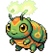

 Light
Light Psychic
PsychicTap a stage to read its story.
Cuplet is a round, jewel-bright insect no bigger than a child's palm - emerald green with orange-swirled wing cases and two bright eyes. Tufts of green light flicker from the top of its head like tiny flames, and its six legs are each tipped with a sticky golden pad. It bounces between the luminous blossoms of the Psychic Temple, depositing tiny seeds of meaning wherever it lands. The temple would grow dull and soundless without Cuplet's constant pollinating hops.
Field note: Each surface Cuplet lands on gains a faint sticky glow that lingers for exactly one sunrise.
Light Grove. Cuplet and its family are found in the Light Grove. See everyone who lives there.
Share a Bond Food that matches its types to become friends. Cuplet loves:
A Bond Food is not a trick. It joins your spirit with the Kimuro's spirit, and only when it chooses you.
Print the Kimuro adventure packs: mazes, cards, a board game and Bond Mark medals.
See the printable packs